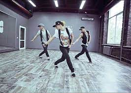
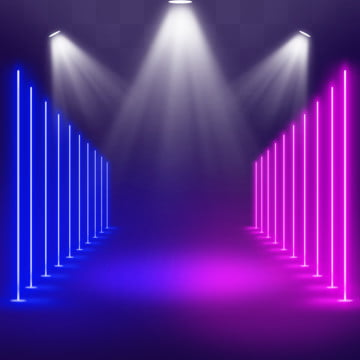
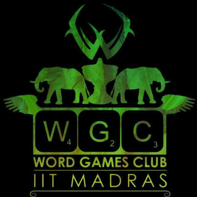
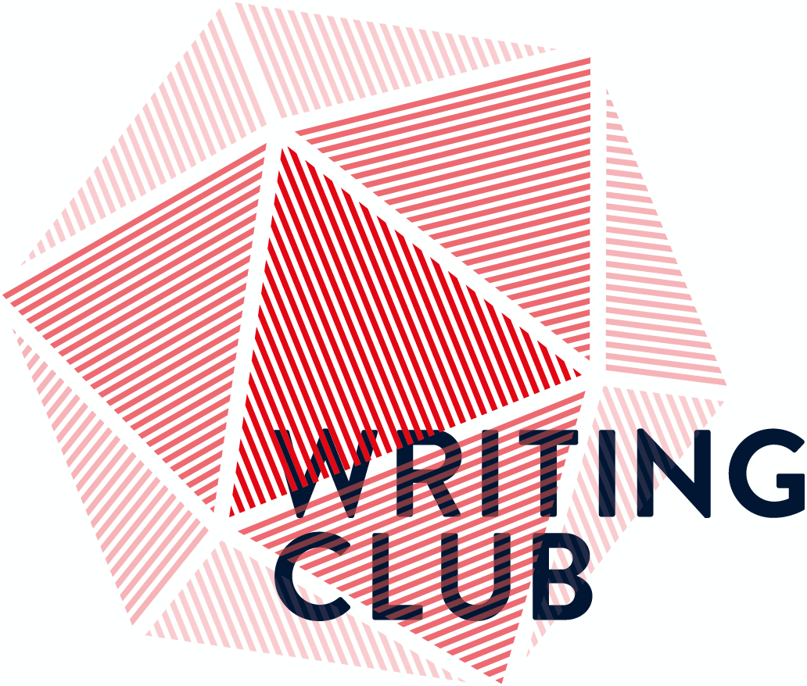
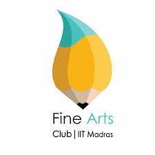
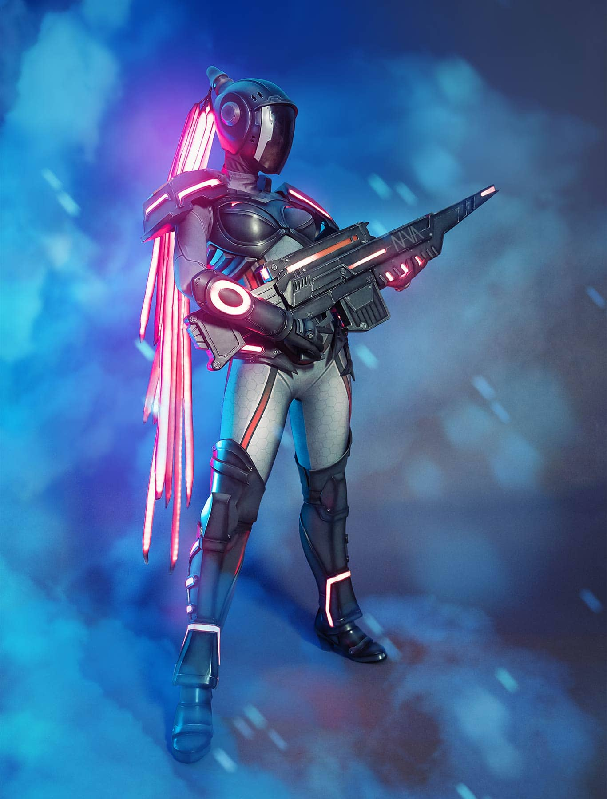
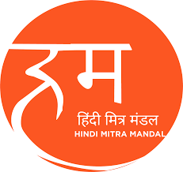
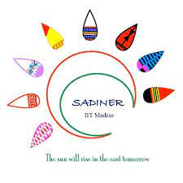
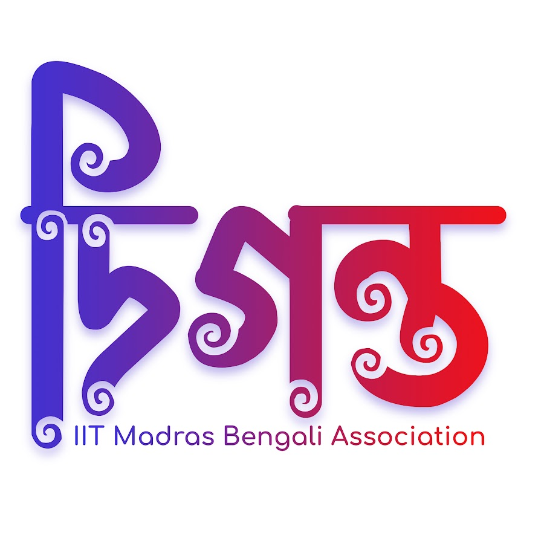

Discover IIT Madras
Clubs & Groups
IITM is home to a diverse range of
clubs that cater to various interests and passions.
Whether you're into sports, arts, academics, or community
service, there's a club for you.
Sangam Clubs

Music Club
The IITM Music Club conducts jam sessions, karaoke nights, open mics, etc., generates
content along with institute musicians and helps to better the institute’s music
scene.
The club also conducts the music events in Saarang and organises the institute’s
music
festival Raagabop every year.

Drama Club
Everyone needs some drama in their life. From Games After Dark, to Stage Design, to
Scriptwriting, to Stagecoach, the Drama Club has space for all!
Join us to be part of a the club that has
nurtured many who went on to be professional thespians!

Choreo Club
Choreo Club is committed to uplift the dance culture in IITM. The Choreo Club
conducts
Workshops catering to people belonging to different proficiency levels throughout
the
semester. The club believes dance is all about moving in joy and the better you
learn
how to move the more joyful you become.

Comedy Club
Laugh, cry, spit and suffer. Make jokes on your would-be lover. We present The comedy
club, boi To mediocrity, say goodbye. With evens like stand up comedy, couch
potatoes,
open mics, parody song, the Comedy Club is sure to leave you in splits!

Oratory Club
Want to engage in passionate wars of words? Want to voice out and justify radical
stances? Want to move audience after audience with your eloquent and persuasive
speeches? Or charm them with your brevity, wit, and humour? Fret not, for the
Oratory
Club is just the place!

Media Club
We are a group of enthusiastic people passionate about photography, film-making. We
at
the club enable you to
pursue this art and have fun in the process through a super exciting array of
workshops,
lectures, photo walks with professionals to scenic places and competitive events.

Fashion Club
This club gives you an opportunity to be a part of ramp walking workshops, modelling
and
other aspects of fashion. Apart from this, the club also organises Mr and Miss
Freshie,
Unfold, and Panache, one of the Biggest fashion shows of India.
Quiz Club
One of the oldest clubs on campus, the IITM Quiz Club is one of the
best in the country.If trivia excites you, if you like to tickle your grey cells
by asking and answering questions, if you want to enjoy the thrill of
“cracking” a well-framed question, then QC is the place to be!

Informals Club
Informals Club endeavours to bring together insti through a variety of fun and
entertaining events throughout the year. In a better world, you’d see numerous
Life-sized games at KV grounds, the happy faces of people playing amusing games near
the
Carnival, and the intense Street sports games happening around during Saarang, all
thanks to us.

eSports Club
The eSports club is the place to be- from streamers to professionals, we have it all.
Be
a part of
the largest eSports event in South India or just help your hostel survive in the
midst
of fierce interhostel rivalries. Watch the best of the best compete or be one of
them,
one of the youngest and the fastest growing club of the insti welcomes you.

Spotlight
Spotlight is the Saarang team which takes care of all the lecture series. Previous
speakers include Kamal
Hasan, Nawazuddin Siddiqui, Shashi Tharoor, Sid Sriram and many more.
By the end of Saarang your insta is going to be filled with your photos
with celebrities.

Design and VFX Club
Weaving technology with creativity, the Design and VFX Club
focuses on actualisation of creativity and through digital media
and tools. Hop on to our wagon to explore digital illustration,
graphic design, animation, UI/ UX, video editing and loads of other
cool stuff! (And discover the opportunities in those fields en route
xD)

Classical Arts Club
The Classical Arts Club plays a pivotal role in promoting and
supporting the classical arts within insti. Over the past year, the CAC has
played host to artistes of renown like Nithyasree Mahadevan,
Leela Samson, Charumathi Raghuraman, and many more.

Word Games Club
Ever noticed that ‘the Morse code’ rearranges to
‘here come dots’? Or ‘New York Times’ to ‘monkeys write’? Whether
you’re a Jack of all wordplay, a master of puns, a compulsive
anagrammer, or just someone who finds the antecedent verbosity
even remotely relatable, then this is the place to be

Writing Club
Have you always been a bookworm, flipping through one book to
another with with ease? Are you someone bursting with stories to
tell, but don’t know where to start? The Writing Club is a community for
everyone, ranging from novices to professionals, poets to artists, and
readers to general enthu nuggets who want to explore all insti clubs!

Fine Arts Club
Fine arts club is a club that primarily focuses on inculcating the
culture of art and its varied forms amongst the students through
its events and workshops. We believe that "Art makes you lose
yourself and find yourself at the same time".

Culinary Arts Club
Culinary Arts Club is the newest addition to the Sangam family! If
you're fascinated by Masterchef and love food, Culinary Arts Club
is the place to be! Help steer insti's food and cooking culture
through workshops, competitions, food fest, and more!

Nova
Ever thought being part of the biggest cosplay event in Chennai? Ever
thought which team brings up all the new events of Saarang? The
answer is Nova. If you want to be the part of the team which brings up
something new, exciting and quirky every year, join the ever-evolving
team of Saarang, Nova.

Meraki
Meraki aims to bring you the unconventional at every Saarang. In 2020,
we had the Ferris wheel and the Columbus ride, the various inflatables at
KV and the Vintage Car Expo. In 2021, you would have been intrigued by
the Tatting workshop and amazed by the Whistling act, Carnatic fusion
act and the sand art act.
IITM TV
The official student Media body of IIT Madras, we,
in IITM TV, cover a wide spectrum ranging from vox-rox
to music videos, satires and short films. Writing, Direction,
Cinematography, Editing, Sound Design - everything everywhere
all at once - is iitm tv. The flexible work culture here allows
every team member to explore, learn and execute, not just
in their own vertical, but in other areas of interest as
well. We work to produce best
content with a bunch of self driven creators - with creativity
in our minds and passion in our hearts.
Independent Bodies
Campus regional clubs host cultural events, meals, and gatherings. Open to students, faculty, and staff.
Great for making friends, easing homesickness. Look for event notices.

Hindi Mitra Mandal
Hindi Mitra Mandal is a group of enthusiastic students who celebrate
the diversity of our country. We have a good history of organizing
Festivals, cultural programs and joyful events like Holi Celebration,
Krishna Janmashtami, Diwali and Navratri in our institute.

Marathi Mitra mandal
Marathi Mitra Mandal is a student-driven body
coming under the various regional Samitis on the campus.The organization aims at
keeping the Marathi culture and spirit alive on the campus through various events and festivals.

Garvi Gujarati Sangathan
Garvi Gujarati Sangathan is a body of Gujarati students
formed with a view to provide a platform for Gujarati
students on the campus to know, meet and bond with each other. GGS
aims to celebrate the cultural festivals prominent in
Gujarat like Navratri, Janmashtami, and many more.

SADINER
SADINER is the association of the students from the North East
region of India. We had an active participation in
events like Independence Day, Republic Day, etc in the institute as well
as social activities like organizing flood relief
funds for the North Eastern states.

Diganto
Diganto, the Bengali Association of IIT Madras is not only an
organization that unites all Bengalis who are part of this institute, but it
is more like a family where we meet people speaking our native
language and share the same culture that brings us the essence of
being at home in Chennai.
KARKA KASADARA TAMIL CLUB
The objectives of the club provide and maintain social, academic and
recreational amenities for its tamil members and to teach Tamil to
non-natives, to acquaint them with the language and its culture as well
as to conduct training and workshops by teachers of foreign
languages and Tamil.
Telugu Samskritika Samithi
Telugu Samskritika Samithi is a group of enthusiastic students who
celebrate the telugu cultural diversity of our country.They organize
Festivals, cultural programs and celebrate events like Vinayaka
Chathurthi, Krishna Janmashtami, Rama Navami in our institute.

KERALA KALA SAMITHI
Decades ago, KKS was founded with faculty and student support. It preserves Kerala's rich cultural legacies like language, poetry, drama, dance (Mohiniattam, Kathakali, etc.). Sharing these experiences on a platform of cherished ethics would bring immense individual and collective benefits.